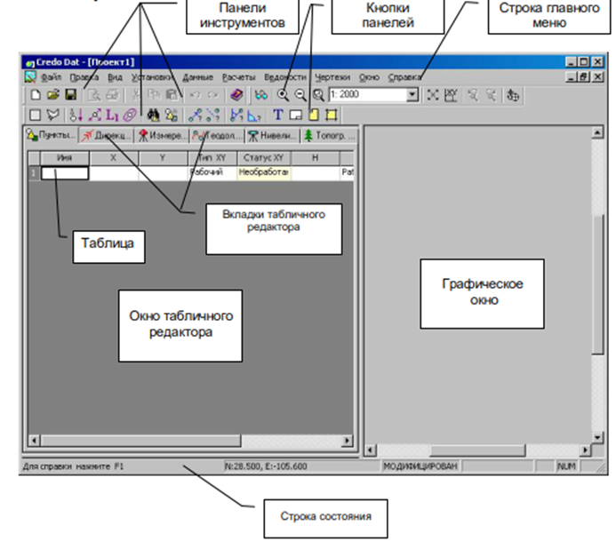
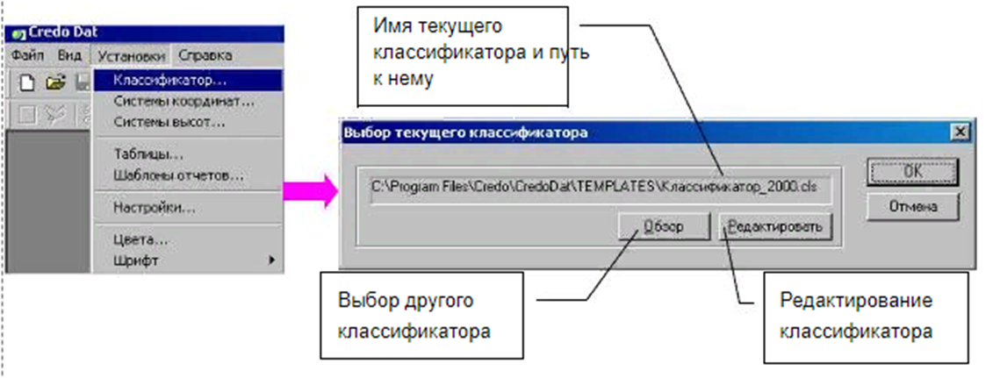
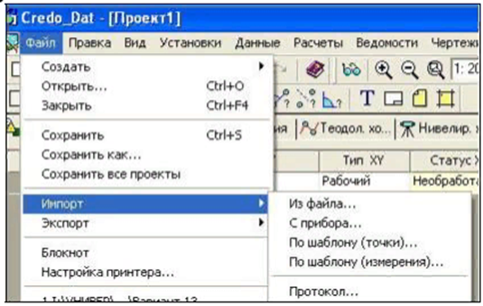
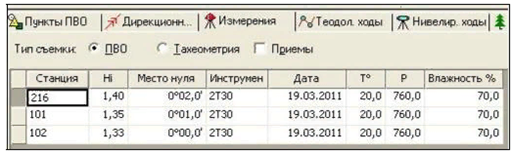
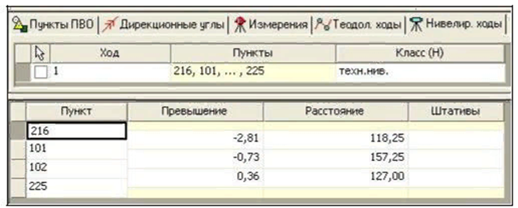
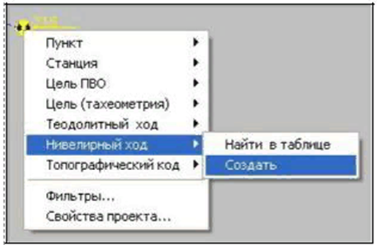
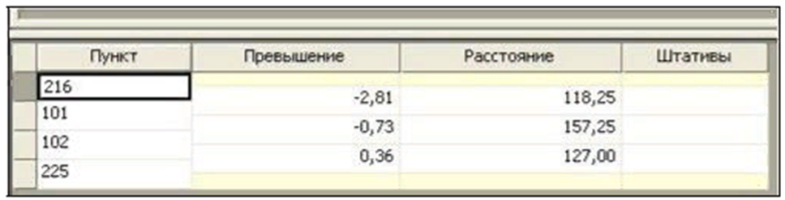
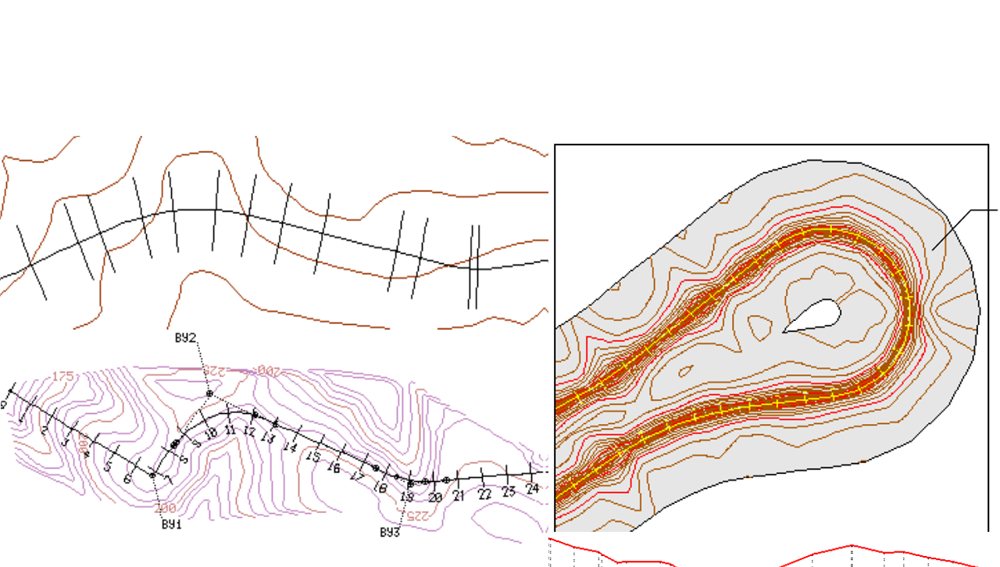

Мавзу: CredoDAT дастури ёрдамида трассанинг профилини тузиш
Reja.
1. CredoDAT dasturi haqida
2. CredoDAT dasturida ma`lumotlar tahlili
3. CredoDAT dasturida trassaning profilini tuzish
Credo_Dat 3.0 ilovasi ko'p hujjatlar rejimida ishlaydi. Bu shuni anglatadiki, bitta dastur
oynasida bir vaqtning o'zida bir nechta loyiha ochilishi va qayta ishlanishi mumkin.

Dastur oynasi quyidagi elementlarni o'z ichiga oladi:
- Asosiy menyu (menyu paneli);
- Menyu buyruqlariga tezkor kirish uchun belgilarni o'z ichiga olgan asboblar paneli;
- Faol loyiha oynasining status satri;
- Windows qayta ishlangan loyihalar.
- Credo_Dat loyiha oynasi :
- Loyiha oynasining o'ng qismini egallagan va ular ustida interfaol harakatlar bajarish
uchun loyiha elementlarini aks ettirish uchun mo'ljallangan grafika oynasi,
- Chapda joylashgan va klaviaturadan ma'lumotlarni ko'rish, kiritish va tahrirlash uchun
ishlatiladigan jadvallar.
"Classifier.cls" faylini tanlang. Mumkin bo'lmagan sohada siz yangi tasnifning nomi va
uning yo'lini ko'rasiz.

Asosiy tizim ma'lumotlari quyidagilar:
· Yo'nalishning dastlabki koordinatalari va balandligi, yo'nalish burchagi,
Dala o'lchovlari natijalari - masofa, gorizontal
vertikal burchaklar, balandliklar,
· Yo'q qilinadigan topografik ob'ektlar to'g'risidagi ma'lumotlar.
Qo'shimcha ma'lumotlar: ishlatiladigan koordinata tizimlari va ularning parametrlari,
tortishish texnologiyasi haqida umumiy ma'lumotlar (birliklar o'lchovlar, vertikal,
instrumental tuzatishlarni hisoblash uchun formulalar), atmosfera sharoitlari,
o'lchovlarning oldindan aniqligi (klasslari). Raster substratlar shaklidagi kartografik
materiallar yordamchi ma'lumotlar sifatida ishlatiladi.
Tizimning ma'lumot manbalari quyidagilardir:
Quyidagi formatlarda elektron taxeometrlar (yozuvchi) fayllari:
-Sokkia (SDR2x/33),
-Nikon (DTM400-710,RDF),
-Geodimeter (ARE, JOB),
-Leica (GRE, GSI, IDEX),
-Topcon (GTS6, GTS7),
-Zeiss (R4, R5, Rec500, Rec-E),
-УОМЗ (2Та5, 3Та5).
Ma'lumotlarni import qilish
CREDO_DAT 3.0 tizimi bir necha turdagi ma'lumotlarni import qilishni nazarda tutadi:
· Umumiy elektron stantsiya formatida o'lchov ma'lumotlariga ega fayllar;
· To'g'ridan to'g'ri o'lchov ma'lumotlarini bevosita instrumentdan import qilish(faqat
3TA5 uchun);
· Foydalanuvchilar tomonidan tuziladigan formatda o'lchash fayllari;
· Foydalanuvchilar tomonidan konfiguratsiya qilinadigan formatga muvofiq ballning
koordinatalarini fayllar.

Stantsiya - loyihaning geodeziya tarmog'i (qanday turdagi bo'lishidan qat'iy nazar) har
qanday o'lchovlar olingan har qanday nuqtasi. Shu nuqtada bir nechta stantsiya yaratilishi
mumkin. Xuddi shu stansiyadan o'lchovlar rejali-balandlik asosli, polar o'lchovlari, umumiy
stantsiyalar uchun o'tkazilishi mumkin. Stantsiyalar soni cheklanmagan.
Stantsiya "Data" menyusi / "Jadval" buyrug'i yoki "Baholashlar" yorlig'i bilan
"o'lchovlar"....

Klaviaturadan kirish va geometrik nivelirlash harakatlarini tahrirlash "Rendering"
stolida amalga oshiriladi. Jadval ikkita qismdan iborat: yuqori - harakatning tavsifi
(sarlavhalari) va pastki qismi - har bir harakat uchun ma'lumot taqdim etadi. Harakatlardagi
harakat yoki nuqtalar soni cheklanmagan.
Jadvalda sarlavhani yaratish uchun "Data" / "Rendering" da "Jadval" buyrug'ini chaqiring
yoki «Nivelirlash" yorlig'ini tanlang.

1. Harakatning boshlanish nuqtasiga kursorni "Rasmga tushirish" rejimiga o'tkazing va
o'ng sichqoncha tugmasini bosing.
2. Kontekstli rejimdan "Muvaffaqiyatli harakatlanish" dan "Yarat" buyrug'ini tanlang.
3. Standart kurs tavsifini tahrirlang va klaviatura yordamida ma'lumotlarni kiritishni
davom eting.

- "Ko'chirish" - bu ko'chirish raqami. Raqamlarni ko'chirish faqat raqamli bo'lishi
mumkin.
Raqamlar tahrirlangan.
-“Punktlar" ushbu harakatdan foydalaniladigan elementlarning ro'yxatini o'z ichiga
olgan
o'zgartirilmaydigan maydondir. Ushbu ustundagi ma'lumotlar avtomatik ravishda shu darajadagi
taglikdan to'ldiriladi.
- "Sinf (H)" - ushbu kursda sinchkovlik aniqligini sinash (daraja, guruh) ("Loyihaning
xususiyatlari" / “Aniqligi" ga qarang). Sinf (H) ochiladigan ro'yxatdan "bo'sh joy"
tugmachasini bosib yoki sichqonchani ikki marta bosish orqali tanlanadi.

